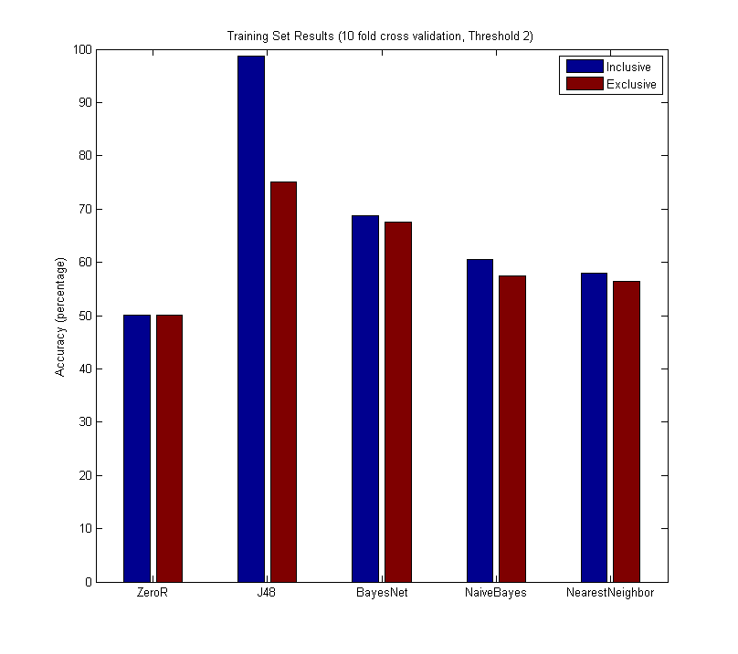

Directory
Extended Abstract
Team Name: Team Prostate
Team Members: Joseph Lee(jle609), Hyung-Soon Daegon Kim (hsk239), Kevin Ye (kyl117), Ji-hoon Kim (jki416)
Contact Email: hyungkim1.2013@u.northwestern.edu
Course: CS349 - Machine Learning, Northwestern University
The goal of this project was to determine if a user was useful or not as a reviewer on Yelp. The more useful a user is, the more “useful” votes he or she would have received from other users. This is important since businesses sometimes create fake accounts to boost their reputations online and increase their ratings or decrease the rating of their competitors.
We used attributes and data from the Yelp Dataset Challenge including attributes such as user account age, total number of reviews per user, and number of friends. In addition, we also made additional attributes such as average review length and average number of swears per review by using natural language processing on the reviews themselves. The machine learning algorithms explored were nearest neighbor, decision tree, naive Bayes, and Bayes net. For training half of the users in the dataset were “useful” and half were not. This created a dataset of 19000 users when “useful” was defined as a user having at least 1 useful vote per review.
J48 proved to be the most effective with an accuracy of 75.07% using 10-fold cross validation. Of course, using attributes that are tightly correlated with our target attribute such as “cool” votes or “funny” votes returns much higher accuracies, but these are very misleading and realistically not very useful.
The graph below shows the results of different machine learning techniques using a definition of an average of 1 helpful vote per review as the baseline for user helpfulness on two different sets of attributes.
